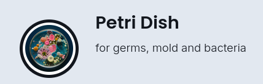
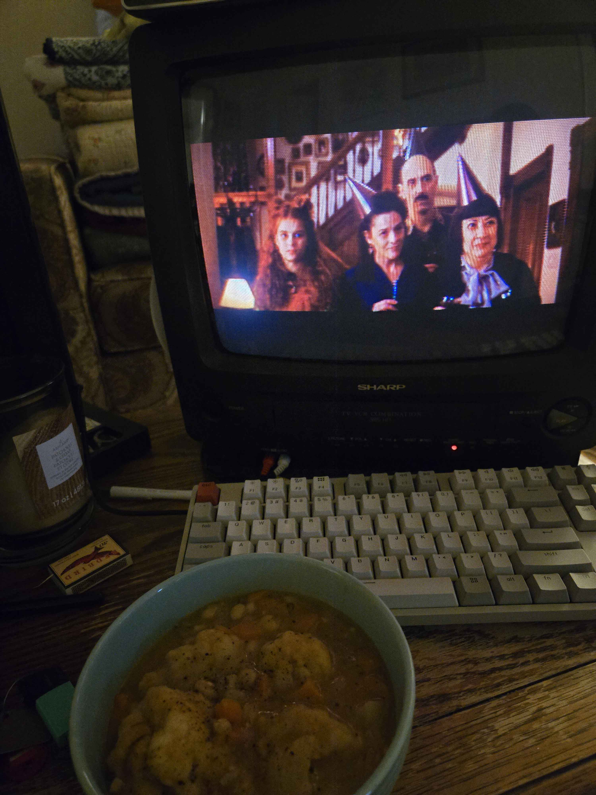
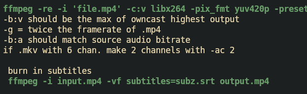

Livestreaming | Owncast
self hosted twitch
October 19, 2026

Owncast as a self hosted FOSS alternative to services such as twitch, for live streaming. It actually works pretty well once you learn a bit about ffmpeg and optomizing bitrates.
It's a great way to stream a movie night for a bunch of people at once; without having a bunch of randoms have accounts on wormhole [jellyfin].
Also its great that it is just HLS stream so literally any device or browser can read it just fine. You can also grab the stream .m38u and play it in any old iptv app or vlc. I play it through vlc command line remotely on a raspberry pi connected to my CRT tv sometimes.

I sometimes broadcast from my laptop -> server over tailscale VPN; but as it stands now only I am able to. I can allow incoming rtmp streams over the internet, but it doesnt play nice with the reverse proxy I use [caddy]. In the future I will probably switch to nginx or something else that is compatable with rtmp specifically.
